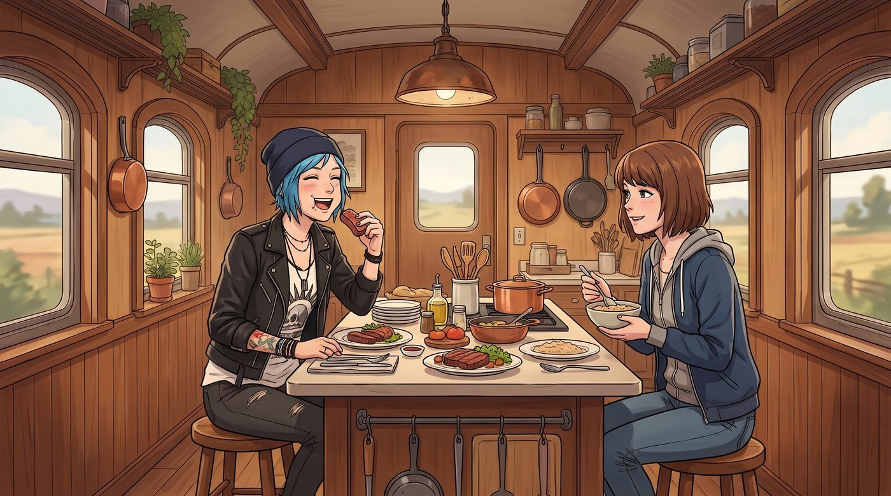

生物過濾協議

DARPA的空投補給向來精準且高效。
第二天中午，一個印著紅色十字和高階傷病特供標籤的保溫箱，被無人機穩穩地降落在了二號車廂外的空地上。
箱子一打開，裡面整整齊齊地碼放著幾瓶裝在軍綠色防震瓶裡的戰術高純度鐵劑，以及一塊足足有五磅重、帶著大理石般完美油花、被真空包裝保護得極好的頂級神戶牛肝。
一、犧牲奉獻的謊言
原本還在為 Max 的次聲波電磁海拔綜合症感到擔憂的 Chloe，在看到那塊牛肝的瞬間，眼睛裡的擔憂直接轉化為了野性的食慾。
「Max，妳看這油花……」Chloe 嚥了一口唾沫，拍著胸脯信誓旦旦地說，「妳這兩天流了那麼多血，腸胃肯定很虛弱，直接吃這麼高級的脂肪絕對會拉肚子。作為妳最好的朋友，我決定替妳承擔這份消化的痛苦！」
還沒等 Max 答應，Chloe 已經以迅雷不及掩耳的速度，將那塊牛肝扔給了剛好路過的 Kate。「天使！用妳昨天提煉的迷迭香蒜香黃油，大火快煎！切厚片！」
十五分鐘後。當 Lily 拿著電子簽收板，準備來監督核心資產進行物理補血時，她看到的是這樣一幅畫面：
Chloe 毫無形象地坐在高腳凳上，手裡拿著叉子，正將最後一塊外焦裡嫩、吸滿了黃油香氣的神戶牛肝塞進嘴裡，滿臉寫著碳基生物達到高潮時的幸福感。而 Max 則坐在對面，手裡捧著一碗 Kate 煮的清淡燕麥粥，笑瞇瞇地看著 Chloe 狼吞虎嚥。
二、預算被貪污的怒火
Lily 敲擊電子板的手指，停在了半空中。她那雙平時總是毫無波瀾的眼睛裡，罕見地燃起了一絲名為預算被貪污的怒火。
「Chloe 學姐。」Lily 的聲音雖然依舊軟糯，但周圍的空氣溫度彷彿瞬間下降了五度，「請您解釋一下，為什麼本該用於修復 Max 學姐受損微血管的醫療戰略物資，會出現在您的消化系統裡？」
「咳咳！」Chloe 差點被噎住，她迅速抓起旁邊的水杯灌了一口，眼珠子一轉，開始了她引以為傲的瞎掰：「實習生，妳不懂！這叫戰術性試毒！妳想想，這可是空投送來的東西，誰知道他們有沒有在裡面加了什麼奇怪的追蹤劑？Max 可是我們營地的寶貴攝影師，我怎麼能讓她冒險？我這是在用自己的肉身為她排雷！」
Lily 顯然不吃這一套。她冷酷地調出了一份處罰表單：「根據營地紀律，挪用特批醫療物資，等同於盜竊聯邦財產。我現在需要您簽署一份自願放棄本月所有零食與啤酒配額的還款協議……」
「哎呀，Max 叫我幫她修相機！先走一步！」還沒等 Lily 說完，Chloe 已經腳底抹油，像一隻滑溜的泥鰍一樣，直接從高腳凳上彈了起來，一個靈活的翻滾從車廂後門溜了出去。
「Chloe 學姐，逃避審計只會增加您的滯納金！」Lily 拿著電子板，面無表情地追了出去。
三、一整天的貓鼠遊戲
在接下來的一整天裡，二號車廂上演了一場極度荒謬的貓鼠遊戲。
Lily 就像一個自帶GPS導航的索命幽靈，無論 Chloe 躲在哪裡，她都能精準地出現。Chloe 躲在皮卡的底盤下假裝修車，Lily 就會戴著安全帽，把那份協議遞到車底；Chloe 爬上車廂頂部試圖裝死，Lily 就會操控營地的無人機，將協議懸停在 Chloe 的臉上。
每次 Lily 一開口關於牛肝的折舊賠償，Chloe 就會立刻發動嘴砲技能胡謅一通，然後藉機逃跑。
到了傍晚，Chloe 實在跑不動了，氣喘吁吁地躲進了 Max 的暗房裡，死死抵住門。
「Max……救命……」Chloe 癱坐在地上，「那個行政魔鬼要逼我簽字了。一個月沒有啤酒，我會死的。」
Max 無奈地看著這個為了吃一口肉把自己逼到絕路的傢伙，眼神裡卻滿是藏不住的溺愛。她知道 Chloe 其實是怕她吃了那些太油膩的東西腸胃不舒服，雖然這傢伙嘴饞也是真的。
「交給我吧。」Max 輕輕拍了拍 Chloe 的肩膀，轉身打開了暗房的門。
四、共生體營養轉移
門外，Lily 果然正端著那杯熱牛奶，手裡拿著電子板，一絲不苟地等待著。
「Max 學姐，」Lily 推了推眼鏡，「請讓開。我必須對挪用醫療物資的行為進行合規性清算。」
「Lily，妳誤會了。」Max 雙手背在身後，露出了一個極度無辜且真誠的笑容，「Chloe 沒有挪用物資，她是在嚴格執行我的生物過濾協議。」
「生物過濾協議？」Lily 微微皺眉，這個詞彙似乎沒有在她的資料庫裡。
「是的。」Max 煞有其事地指了指桌上那些裝著鐵劑的藥瓶，「妳看，這些戰術鐵劑的純度太高了，加上神戶牛肝裡富含的重金屬離子，如果我直接攝入，很可能會引發二次微血管爆裂。所以，我委託 Chloe 作為一級生物過濾載體。」
Max 越編越順，甚至開始借用 Lily 平時的語氣：「Chloe 攝入牛肝後，她強大的藍領代謝系統會將其中的高純度鐵元素進行溫和的降維處理。然後，我只需要通過與她共享同一杯水、或者分享同一塊燕麥餅乾，當然，偶爾的肢體接觸也算，就能安全地吸收那些經過她生物降解後的次級營養素。這在醫學上叫作共生體營養轉移。所以，她吃牛肝，其實是為了我好。」
暗房裡的 Chloe 聽得目瞪口呆。她萬萬沒想到，Max 撒起謊來，居然比她還要一本正經、還要具有科幻色彩！
五、行政黑魔法的最高境界
車廂裡的空氣安靜了三秒鐘。
Lily 看著 Max，那雙圓框眼鏡後的眼睛微微瞇起。作為一個頂級的邏輯大師，她怎麼可能聽不出這種把搶吃牛肝包裝成共生體營養轉移的瞎掰？這簡直比 Chloe 昨天編的次聲波震破血管還要離譜十倍。
但是，看著 Max 那副我就要護著她、妳能拿我怎樣的溺愛表情，Lily 輕輕嘆了口氣。
行政黑魔法的最高境界，不是戳穿謊言，而是找到一個能讓帳面平息的合規藉口。既然核心資產本人都出具了豁免聲明，這筆帳就有辦法做平。
「原來是基於安全的生物過濾協議。」Lily 點了點頭，在電子板上飛速修改了幾行字，然後抬起頭，給了 Max 一個乖巧而深藏功與名的微笑：「既然如此，我會將 Chloe 學姐的這頓午餐，在帳面上重新歸類為人體過濾器設備維護費。不需要賠償了。」
暗房裡傳來 Chloe 壓抑不住的歡呼聲。
六、菠菜的報復
「不過，Max 學姐。」Lily 轉過身，準備離開前，輕飄飄地留下了一句話：「既然 Chloe 學姐現在是您的生物過濾載體，為了確保營養轉移的效率，我已經在明天的採購清單裡，把她的啤酒配額全部替換成了高濃度的菠菜榨汁。畢竟，過濾器也是需要保養的，對吧？」
暗房裡的歡呼聲戛然而止，取而代之的是 Chloe 絕望的哀嚎：「不！！！實習生妳這個魔鬼！！我討厭吃菜！！！」
Max 忍不住笑出了聲。她無奈地搖了搖頭，在這個充滿了黑魔法和護短的車廂裡，沒人會真的吃癟，但也絕對沒人能佔到系統的便宜。